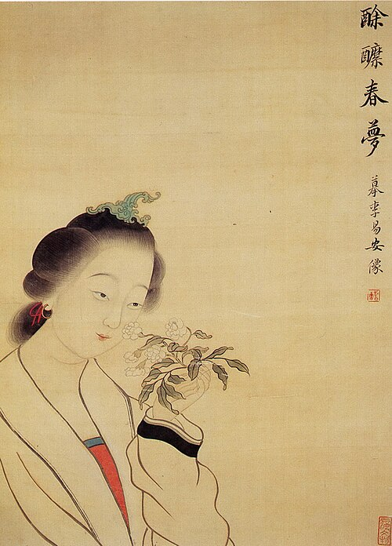

----- 如梦令·昨夜雨疏风骤 | 声声慢·寻寻觅觅 | 一剪梅·红藕香残玉簟秋 -----
昨夜雨疏风骤，浓睡不消残酒。试问卷帘人，却道海棠依旧。知否，知否？应是绿肥红瘦。
寻寻觅觅，冷冷清清，凄凄惨惨戚戚。乍暖还寒时候，最难将息。三杯两盏淡酒，怎敌它、晚来风急？雁过也，正伤心，却是旧时相识。
满地黄花堆积。憔悴损，如今有谁堪摘？守着窗儿，独自怎生得黑？梧桐更兼细雨，到黄昏、点点滴滴。这次第，怎一个愁字了得！
红藕香残玉簟秋。轻解罗裳，独上兰舟。云中谁寄锦书来？雁字回时，月满西楼。
花自飘零水自流。一种相思，两处闲愁。此情无计可消除，才下眉头，却上心头。
© 版权所有 someone@263.net